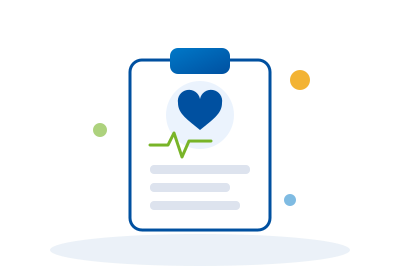
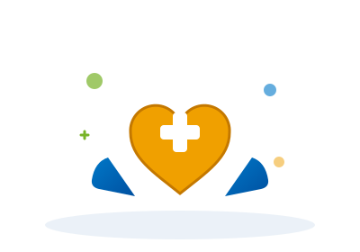

Prévention primaire
Agir avant la survenue du risque. La prévention primaire est la forme la plus efficace de protection : elle identifie et élimine les dangers professionnels avant qu'ils n'atteignent le travailleur.
Avantages pour votre entreprise
Prestations incluses

Prévention secondaire
Détecter tôt pour agir vite. La surveillance médicale régulière permet d'identifier les atteintes à la santé dès leur apparition et d'en limiter les conséquences pour le travailleur et l'entreprise.
Avantages pour votre entreprise
Prestations incluses

Prévention tertiaire
Accompagner après la survenue. Lorsqu'une pathologie est établie, notre équipe intervient pour limiter les complications, réduire les séquelles et favoriser le retour durable à l'emploi.
Avantages pour votre entreprise
Prestations incluses
Recherche en SST
Comprendre pour mieux décider. Des études et analyses rigoureuses en milieu professionnel pour transformer les données terrain en stratégies de prévention concrètes et mesurables.
Avantages pour votre entreprise
Prestations incluses
Support administratif
Traçabilité, ordre et conformité. Une gestion documentaire rigoureuse pour assurer le suivi de toutes les actions SST et sécuriser juridiquement votre entreprise à tout moment.
Avantages pour votre entreprise
Prestations incluses
Audit SST et conseil réglementaire
Évaluer pour sécuriser. Un audit complet de votre conformité en santé et sécurité au travail, suivi de recommandations concrètes pour corriger les écarts et renforcer votre dispositif SST.